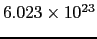
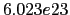

Um programa C consiste de uma ou mais partes chamadas funções. Um programa em C consiste de pelo menos uma função chamada main. Esta função marca o ponto de início de execução do programa.
Programas C tem a seguinte estrutura geral:
#includestdio.h

definição de constantes
funções
main()
{
declaração de variáveis
....
sentenças
....
}
Cada instrução em C é chamada de sentença. Sentenças simples são terminadas com um ponto e vírgula. Usando chaves, podemos agrupar sentenças em blocos, chamados de sentenças compostas.
Exemplos de sentenças incluem:
x = 3;
{
i = 3;
printf("%d\n", i);
i = i + 1;
}
O corpo da função main() é um exemplo de sentença composta.
Uma variável é uma informação qe você pode usar dentro de um programa C . Esta informação está associada com um lugar específico da memória (isso é feito pelo compilador). O nome da variável e o endereço da memória onde a informação está armazenada estão associados. O nome e o endereço não mudam. Mas, o valor da informação pode mudar (o valor do que está dentro da caixa pode mudar, embora o tipo seja sempre o mesmo). Cada variável tem um tipo associado. Alguns tipos de variáveis que discutiremos incluem int, char e float.
Cada variável usa uma determinada quantidade de armazenamento em memória. A maneira como sabemos quantos bytes são utilizados é pelo tipo da variável. Variáveis do mesmo tipo utilizam o mesmo número de bytes, não interessando qual o valor que a variável armazena.
Um dos tipos utilizados para armazanar números é o int. Ele é usado para armazenar números inteiros. Em Borland C++ , valores do tipo int usam 2 bytes de memória e podem armazenar valores de -32768 a 32767. Por exemplo, 42, 1492, ou -3691.
Outro tipo é o char, usado para armazenar caracteres. Um caracter é um símbolo (uma letra do alfabeto, um dígito, um símbolo de pontuação, etc). Um char é armazenado em 1 byte de memória. Cada caracter é associado com um valor entre 0 e 255. O compilador C faz a tradução para você, portanto você não precisa saber estes números. Em C , um caracter é representado entre apóstrofes ('). Por exemplo, 'C', 'a', '5', '$'. Note que '5' é um caracter, e não o inteiro 5.
A figura acima mostra como um int e um char são armazenados na memória.
Outro tipo existente é o float, usado para armazenar números reais (números com o ponto decimal). Este números são armazenados em duas partes: a mantissa e o expoente. Eles são armazenados de uma maneira que se assemelha a notação exponencial. Por exemplo, o número  é escrito como . Neste caso, a mantissa é 6.023 e o expoente 23.
Estes números são armazenados de uma forma padrão, tal que a mantissa tem apenas um dígito para a esquerda do ponto decimal. Desta forma, 3634.1 é escrito como 3.6341e3, e 0.0000341 é escrito 3.41e-5. Note também que a precisão é limitada pela mantissa. Somente os 6 dígitos mais significativos são armazenados. Em Borland C++ um float ocupa 4 bytes de memória. Há muitos outros tipos (short, long, double), que serão descritos no futuro.
Se você usa variáveis no programa, você deve defini-las. Isto envolve especificar o tipo da variável e o seu nome. As regras para formar nomes de variáveis em C são:
É sempre uma boa idéia ter certas regras (para você mesmo) para nomear variáveis para tornar o programa mais legível:
Os tipos básicos de dados existentes em C são:
| Tipo de Dado | Bits | Faixa de Valores |
| char | 8 | -128 a 127 |
|---|---|---|
| int | 16 | -32768 a 32767 |
| float | 32 | 6 a 7 dígitos significativos |
| double | 64 | 15 a 16 dígitos significativos |
Abaixo está um exemplo de um programa com diversas definições de variáveis:
main()
{
int pera;
char qualidade;
float peso;
pera = 3;
qualidade = 'A';
peso = 0.653;
...
}
Quando variáveis são definidas, elas não possuem valores ainda. Nós damos valores as variáveis usando o operador de atribuição (=). Variáveis também podem ser inicializadas para conter valores quando são definidas. Usando esta forma, o program acima ficaria:
main()
{
int pera = 3;
char qualidade = 'A';
float peso = 0.653;
...
}
Para resumir: quando um programa é executado, uma variável é associada com:
Em C , além de variáveis, nós podemos usar também números ou caracteres cujos valores não mudam. Eles são chamados de constantes. Constantes não são associados a lugares na memória.
Assim como variáveis, constantes também têm tipos. Uma constante pode ser do tipo int, char, etc. Você nao tem que declarar constantes, e pode utilizá-las diretamente (o compilador reconhece o tipo pela maneira que são escritos). Por exemplo, 2 é do tipo int, e 2.0 é do tipo double. Por convenção, todas as constantes reais são do tipo double.
Um constante caracter é escrita entre apóstrofes, como em 'A'. Todas
as letras, números e símbolos que podem ser impressos são escritos
desta forma em C . Às vezes precisamos de caracteres que não
podem ser impressos, por exemplo, o caracter de ``nova linha'', que não
tem uma tecla específica no teclado. Neste caso, usa-se caracteres de escape. Tais caracteres são escritos não somente como
um símbolo entre apóstrofes, mas como um sequência de caracteres entre
apóstrofes. Por exemplo, '\n' é o caracter para nova linha (uma
sequência que inicia com a barra invertida é chamada de
sequência de escape). Se quisermos representar o caracter de
barra invertida, temos que escrever '\\'. Note que
\n é o caracter de nova linha - embora use-se dois símbolos
para representá-lo. A barra invertida é chamada de escape.
Ele diz ao compilador que o n que segue não é a letra n, mas que
a sequência completa de caracteres deve ser interpretada como o
caracter de ``nova linha''.
Cada caracter constante tem um valor inteiro igual ao seu valor numérico do seu código ASCII. Por exemplo, considere a constante 'A', que tem código ASCII 65, e 'B' que tem código 66. Nós podemos usar a expressão 'A' + 1. O resultado é o valor 66. E se o tipo da expressão resultante for char, então o resultado da expressão é 'B'.
Se quisermos que um programa C mostre alguns resultados, or se quisermos que o programa peça ao usuário que entre com alguma informação, nós podemos usar as funções existentes em C chamadas printf() e scanf(). Se você quiser usar estas funções em seu programa, voce deve incluir a seguinte linha no início do seu programa:
#include  stdio.h
stdio.h
Isto causa que o arquivo header chamado stdio.h seja incluído no seu arquivo fonte. Este arquivo contém protótipos das funções print() e scanf(). Ele declara ao compilador o nome das funções e algumas informações adicionais necessárias para que as instruções sejam executadas corretamente.
printf() pode ser utilizado para imprimir mensagens e valores em uma variedade de formatos. Por enquanto, printf() é melhor descrito através de exemplos.
printf(``Alo todo mundo'');
Imprimirá Alo todo mundo para o usuário.
Para dizer a função printf exatamente o que fazer, nós devemos especificar o que será impresso. Nós devemos dar a função o que chamamos de argumentos. No exemplo acima, ``Alo todo mundo'' é um argumento para a função printf().
O primeiro argumento do printf() é sempre um string (uma série de caracteres entre aspas (")).
Nós também podemos colocar caracteres de escape no string para imprimir
caracteres especiais. Por exemplo, colocando \n no string
causa que o restante do string seja impresso na linha seguinte. Outros
caracteres de escape serão apresentados no futuro.
Se quisermos imprimir o valor de expressões variáveis, argumentos adicionais são necessários. Dizemos ao printf() como mostrar valores de expressões usando especificadores de formato. Podemos colocar %c, %d, %f (ou outros especificadores de formato listados no texto) dentro do primeiro argumento para especificar o que queremos dar display. Nós então passamos argumentos adicionais que ser referem aos especificadores de formato (na ordem em que eles ocorrem). Este argumentos podem ser constantes ou variáveis, ou alguma expressão mais complicada. O que quer que eles sejam, eles devem ser avaliados e os valores obtidos e impressos de acordo com os especificadores de formato. Considere o seguinte programa:
#include
#define PRECO 1.99
main()
{
int pera = 3;
char qualidade = 'A';
float peso = 2.5;
printf(``Existem %d peras de qualidade %c ``, pera, qualidade);
printf(``pesando %f quilos.\n'', peso);
printf(``O preco por quilo e %f, total e %f\n'', PRECO, peso * PRECO);
}
A saída do programa será:
Existem 3 peras de qualidade A pesando 2.500000 quilos.
O preco por quilo e 1.990000, total e 4.975000
A linha #define PRECO 1.99 no início do programa define uma macro. Ou seja, definimos que PRECO é um sinônimo para 1.99 e, portanto, toda ocorrência de PRECO no programa é substituído por 1.99 antes que ele seja compilado.
Nós também podemos especificar o tamanho utilizado para impressão da seguinte forma:
%6d inteiro, com pelo tamanho pelo menos 6
%6f ponto flutuante, com tamanho pelo menos 6
%.3f ponto flutuante, com 3 digitos depois do ponto decimal
%6.3f ponto flutuante, com tamanho pelo menos 6 e 3 digitosdepois do ponto decimal
%6.0f ponto flutuante, com pelo menos tamanho 6 e nenhum digitodepois do ponto decimal.
Note que a especificação de tamanho simplesmente determina o tamanho mínimo. Se o número não couber no tamanho especificado, o número completo será mostrado.
Quando utilizar a função printf() tenha cuidado para especificar o tipo correto dos argumentos. Se o tipo do argumento não for correto, o compilador Borland C++ não acusará erro, e um valor incorreto será mostrado. Por exemplo, no programa abaixo que está incorreto:
#include
main()
{
printf(``Exemplo errado: %d\n'', 3.14159);
}
O resultado do programa será alguma coisa como:
Exemplo errado: -31147
scanf() pode ser usado para ler valores digitados no teclado. Estes valores são lidos de acordo com especificadores de conversão, que são especificados pelo programador como argumentos do scanf().
Considere o seguinte programa:
#include
main()
{
int idade;
printf(``Entre sua idade: ``);
scanf(``%d'', &idade);
printf(``Voce tem %d anos\n'', idade);
}
Este programa mostrará no monitor: Entre sua idade: e aguardará que um número seja digitado e a tecla ENTER. Depois disso, a variável idade conterá o valor digitado pelo usuário.
Assim como com o printf(), o primeiro argumento é o especificador de formato. Os próximos argumentos correspondem a o que está sendo especificado pelo primeiro argumento.
Note o & precedendo a variável idade. Simplesmente lembre-se que você geralmente precisará colocar um & precedendo nomes de variáveis em um scanf(). Você sempre precisará usá-lo antes de variáveis do tipo primário como os discutidos até este momento ( int, char, float, e suas versões long e unsigned).
Mais de um valor pode ser lido por um mesmo scanf(). Considere o seguinte exemplo:
#include
main()
{
int dia, mes, ano;
printf(``Entre com a data do seu aniversario (dd mm aa): ``);
scanf(``%d %d %d'', &dia, &mes, &ano);
printf(``Voce nasceu em %d/%d/%d\n'', dia, mes, ano);
}
Este exemplo funciona exatamente como o exemplo anterior. Um único scanf() lê os 3 números quando estes números são separados por espaços (espaços em branco, tabulação, novas linhas). Então você pode teclar ENTER depois de cada número, ou colocar espaços ou tabulações entre os números. Os espaços são ignorados pelo scanf(). Os brancos na especificação de formato do scanf(), ``%d %d %d'' são simplesmente para facilitar a leitura do programa, e não tem nada a ver com os espaços ignorados pelo scanf(). Se tivéssemos escrito ``%d%d%d'', o scanf() funcionaria da mesma forma. Os espaços em branco simplesmente são necessários para saber quando termina um número e começa o outro.
Porém se o scanf() estiver lendo caracteres (%c), os espaços não são ignorados, já que espaços são caracteres válidos na linguagem. Por exemplo, o código ASCII para espaço em branco e' 32.
ALGORITMO PERIMETRO_AREA
/* Calcula o perímetro e a area de uma circunferencia
de raio R (fornecido pelo usuario) */
/* Definir variaveis */
int Raio;
float Perim, Area, PI;
PI = 3.14159;
/* Obter Raio da circunferencia */
Escreva("Entre com o valor do raio:");
Leia(Raio);
/* Calcular Perimetro do Circulo */
Perim = 2 * PI * Raio;
/* Calcular Area da Circunferencia */
Area = PI * Raio ** 2;
/* Exibir Resultados */
Escreva("O perimetro da circunferencia de raio", Raio, "eh", Perim);
Escreva("e a area eh ",Area);
/* Terminar Programa */
FIM_ALGORITMO PERIMETRO_AREA
/* programa que calcula o perímetro e a área de uma
circunferência de raio R (fornecido pelo usuário) */
#include <stdio.h> /* inclui diretivas de entrada-saída */
#include <math.h> /* inclui diretivas das funções matemáticas */
#define PI 3.14159
main()
{
/* Definir variaveis */
int Raio;
float Perim, Area;
/* Obter Raio da circunferencia */
printf("Entre com o valor do raio: ");
scanf("%d", &Raio);
/* Calcular Perimetro do Circulo */
Perim = 2 * PI * Raio;
/* Calcular Area da Circunferencia */
Area = PI * pow(Raio, 2);
/* Exibir Resultados */
printf("O perimetro da circunferencia de raio %d eh %.2f \n", Raio, Perim);
printf("e a area eh %.2f", Area);
}